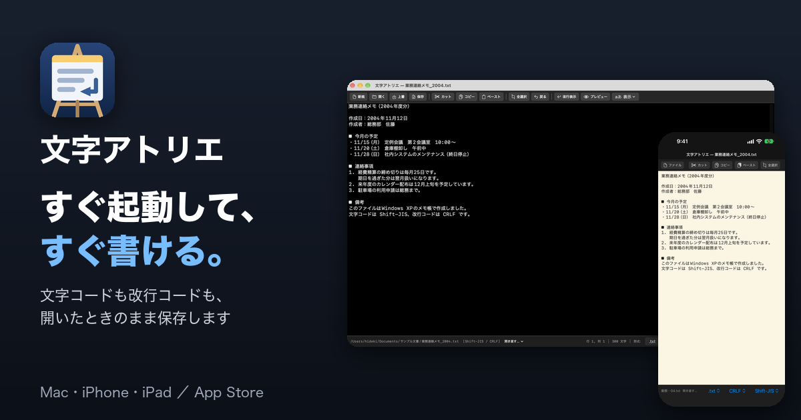

文字アトリエ

文字アトリエ（モジアトリエ）は、すぐ起動して、すぐ書ける、速くてシンプルなテキストエディタです。Mac / iPhone / iPad で使えます。文字コード（UTF-8 / Shift-JIS / EUC-JP / JIS）と改行コード（CRLF / LF）を自動で見分け、開いたときのまま保存します。Markdown（.md）の編集とプレビュー、印刷・PDF 書き出しにも対応しています。
2026年11月に、アプリの名前を「MojiAtelier」から「文字アトリエ」に変えました。機能と使い方は変わりません。
使い方（Mac）
- ツールバーの「開く」（⌘O）でファイルを選ぶか、Finder で .txt / .html をダブルクリックして開きます。
- 画面下に、判別した文字コードと改行コードが表示されます。
- 編集して「上書」（⌘S）を押すと、開いたときと同じ文字コード・改行コードで保存されます。
- 形式を変えて保存したいときは、画面下のメニューで文字コード・改行コード・拡張子を選び直してから「保存」（⇧⌘S）します。
使い方（iPhone / iPad）
- 上の「開く」で、本体・iCloud Drive・外付けストレージのテキストを選んで開きます（「ファイル」アプリでファイルを長押し → 共有 → 文字アトリエ でも開けます）。
- 画面下に、判別した文字コードと改行コードが表示されます。
- 編集して「上書」を押すと、開いたときと同じ文字コード・改行コードで、同じ場所に書き戻します。
- 新しく書いたものは「保存」で名前を付け、保存先のフォルダを選びます。形式を変えたいときは、画面下のメニューで拡張子・改行コード・文字コードを選び直してから保存します。
Markdown
- 形式が .md のとき、ツールバーの下に記法のボタン列（見出し・太字・箇条書き・番号・引用・リンク・表・コードなど）が出ます。選択した文字を囲む、行の先頭に記号を付ける、雛形を入れる、の3種類の動きです。
- 「プレビュー」で書式どおりの表示に切り替わります。入力が止まると自動で更新されます。Mac と iPad では「表示」メニューの「プレビューの表示方法」で、編集画面の横に並べるか（2画面）、編集画面と切り替えるか（1画面）を選べます。iPhone では編集画面と切り替えて表示します。
- プレビュー中の URL やメールアドレスを押すと、ブラウザ（メールアドレスはメールアプリ）で開きます。
- プレビューは画像を表示しません。表は簡易表示です。
よくある質問
- Q. 開いたら文字化けしていました
- A. 自動判別が外れた可能性があります。画面下の「開き直す…」から文字コードを指定して読み直してください（読めない文字コードを選ぶとエラーになり、本文は変わりません）。それでも直らない場合は emc.hs07@gmail.com へお知らせください。
- Q. 全角スペースやタブが混ざっていないか確認したい
- A. 「表示」メニューの「全角スペース・タブを表示」をオンにすると、全角スペースは □、タブは → で表示されます（改行マークと同じく表示だけで、本文には書き込みません）。行番号や文字の大きさも同じメニューで変えられます。
- Q. 明るい背景で使いたい
- A. 「表示」メニューの「配色」で、黒背景・白文字とクリーム背景・黒文字を切り替えられます。本文とプレビューの色が変わります。
- Q. 印刷や PDF にしたい
- A. Mac は「ファイル」メニューの「プリント…」（⌘P）で、プリントパネル左下の「PDF」から PDF として保存できます。iPhone / iPad は「PDF」ボタンで共有シートが開き、「"ファイル"に保存」やプリントが選べます。どちらも白地・黒文字で出力します。
- Q. 前に開いたファイルをすぐ開きたい
- A. Mac・iPhone / iPad とも、「ファイル」メニューの「最近使ったファイル」から開けます（10件まで）。
- Q. カードリーダーや USB メモリのファイルを直接編集できますか？
- A. できます。iPhone / iPad の「ファイル」アプリに表示される場所なら、そのまま開いて同じファイルに上書き保存できます。「ファイル」メニューの「開く…」でカード内のファイルを選び、編集後に「上書」を押してください。新しいファイルは「保存（名前を付けて）」で、保存先の「変更…」からカード内のフォルダを選ぶと直接保存されます（カードを付け直したあとは、保存先を選び直してください）。文字コード（Shift-JIS など）と改行の形式は、開いたときのまま保存します。アプリ側に写しは作らないため、カードを外したあと iPhone / iPad に中身は残りません（保存せずに閉じた書きかけだけは、次に起動したときに続けるか破棄するかを選べるよう一時的に残します）。USB-C 接続のカードリーダーで動作を確認しています。Lightning 接続のカードリーダーでは確認できていませんが、「ファイル」アプリでの扱いは同じです。Mac でも、Finder に表示されるカードや USB メモリのファイルをそのまま開いて保存できます。
- Q. 「改行表示」を押すと本文に記号が書き込まれますか？
- A. いいえ。改行マークは画面上に描くだけで、本文にもコピーにも保存内容にも含まれません。
- Q. Windows で開いたときに改行が消えないようにするには？
- A. 画面下の「改行」が CRLF になっていれば、Windows のメモ帳でも正しく改行されます。Windows で作られたファイルを開いた場合は自動で CRLF になります。
- Q. 検索や置換はできますか？
- A. Mac は ⌘F で画面上部に検索バーが開き、バー右端の「置き換え」にチェックを入れると置換欄が出ます。iPhone / iPad は上の「検索」から開きます。
- Q. ファイルを開くたびにウインドウが増えます（Mac）
- A. 現在の仕様です。不要なウインドウは ⌘W で閉じてください。未保存の変更があれば確認が出ます。
- Q. 対応している文字コードは？
- A. 読み込み・保存とも UTF-8（BOM あり／なし）、Shift-JIS（CP932 を含む）、EUC-JP、JIS（ISO-2022-JP）です。
お問い合わせ
不具合のご報告やご要望は emc.hs07@gmail.com までお寄せください。
プライバシーポリシー
 PDF PageRebind
PDF PageRebind Futamado
Futamado CellStay
CellStay ひきだしメニュー
ひきだしメニュー PhotoParcel
PhotoParcel PhotoParcel Select
PhotoParcel Select チャプたん
チャプたん チャプたんブックマーク
チャプたんブックマーク MIDIアトリエ
MIDIアトリエ 事務電卓
事務電卓 Tecola
Tecola グッズ注文まとめ
グッズ注文まとめ